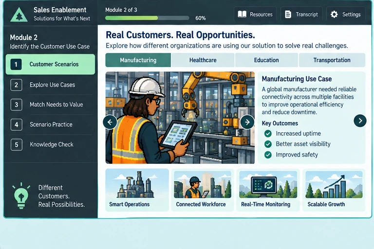

Scenario Context
Meridian Networks
You are reviewing discovery notes for a fictional national retailer with 186 stores, seasonal pop-up locations, and a distribution network. Meridian is replacing aging branch connectivity before its current WAN contracts renew. Several vendors are being evaluated, and the buying team expects a quantified business case plus a controlled pilot before final approval. The notes below are intentionally detailed. Match each piece of information to the MEDDPICC category it most directly supports.
